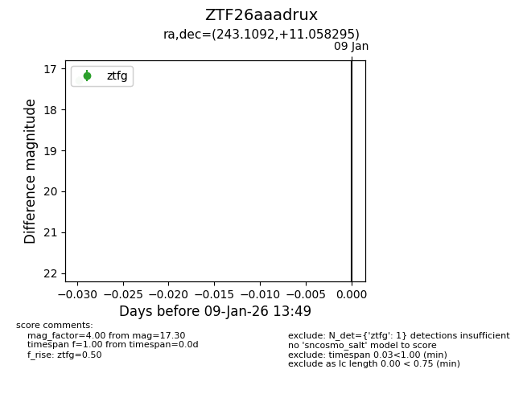
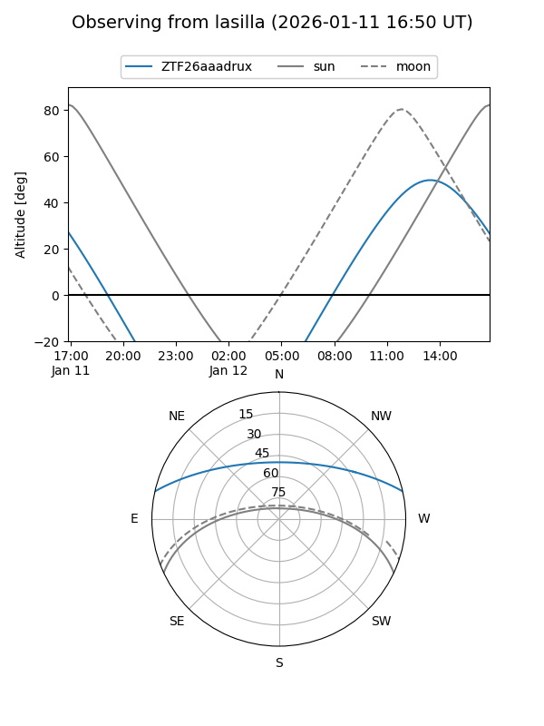
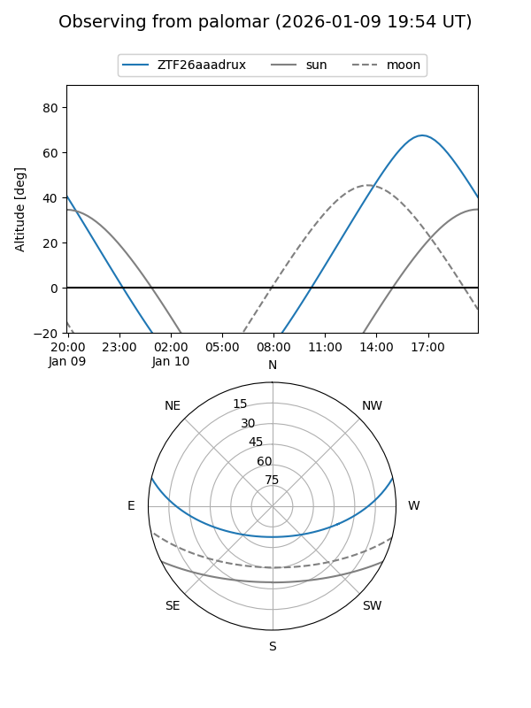

ZTF26aaadrux
Target ZTF26aaadrux at 2026-01-11 13:54
Aliases and brokers:
FINK: link
Lasair: link
ALeRCE: link
alt names
ZTF26aaadrux (ztf,fink_ztf)
Coordinates:
equatorial (ra, dec) = 243.1092,+11.05830
equatorial (HMS+DMS) = 16:12:26.20,+11:03:29.86
galactic (l, b) = (24.2326,+40.24003)
Flags:
Photometry:
last ztfg=17.30
1 ztfg detections
Lightcurve

Visibility


Additional plots